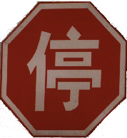
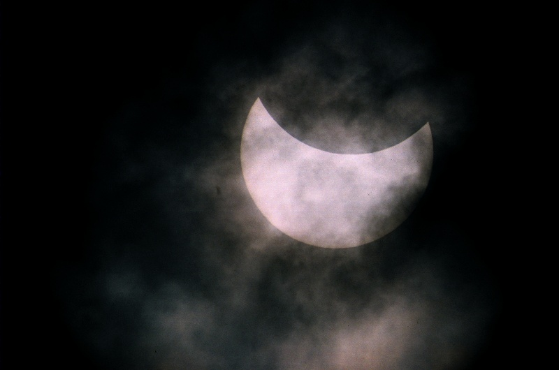
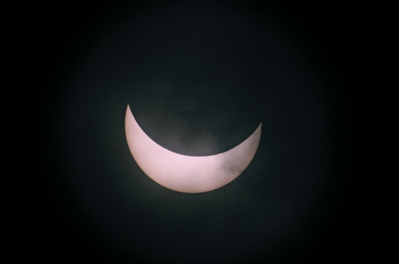
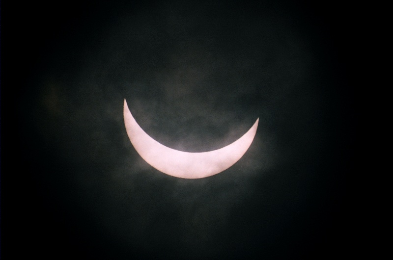
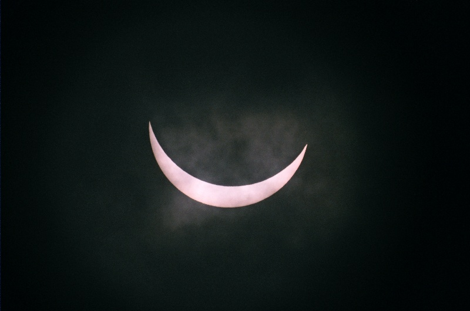

Napfogyatkozás 2009. Kína
 A szokásos figyelmeztetés: A totalitás fázisát kivéve szűrőfólia nélkül ne nézz a napba, pláne ne távcsővel! (Kivéve persze, ha olyan vastag felhőréteg takarja a napot, mint esetünkben)
Hely, idő
A sikeres 2006-os törökországi napfogyatkozás-észlelés után a XXI. század leghosszabb teljes napfogyatkozását (6 perc 39 másodperc) Kínából próbáltuk észlelni 2009. július 22-én.
A totalitás sávja nagyon jól látható ezen a google térképen.
A felhők elől menekülve az eredetileg tervezett Jiashan (Jiaxing) helyett végül a Shanghaihoz tartozó Jinshanwei tengerpartját választottuk észlelési helynek. A tengerparton láthatóan készültek a napfogyatkozásra, külön észlelőhelyet jelöltek ki a kínaiaknak és külön helyet a külföldieknek.
Az észlelési hely koordinátája: 30.708 N, 121.342 E.
A számított (felhőzet miatt nem tudtuk ellenőrizni) kontaktusok helyi időben (UT+8):
- Első kontaktus: 8:23:04
- Második kontaktus: 9:36:09
- Harmadik kontaktus: 9:42:03
- Negyedik kontaktus: 11:01:43
Vagyis a totalitás ideje 5 perc 54 másodperc.
Felszerelés
- Állvány: EQ-3. Ellensúlynak vízzel töltött műanyag flakonokat használtam. Nem túl meglepő, de sokkal kényelmesebb volt ezt az állványt használni (napot megkeresni, napot követni), mint a fényképezőgépállványt a törökországi napfogyatkozáskor.
- Távcső: SkyWatcher Makszutov-Cassegrain 102/1300
- Fényképezőgép: Pentax MZ-5 (filmes gép)
- Filter: Eredetileg Baader Astrosolar napszűrő fóliát (ND 5.0) szerettem volna használni, végül vastag felhőréteget használtam filternek.
Részleges fázis
   {kind=link}
{kind=link}
{kind=link}
{kind=link}
A részleges fázis fényképezésére lehet legjobban felkészülni, és mivel kellően hosszú ideig tart, még rossz időjárásnál is van esély néhány jó kép elkészítésére.
A távcsővet egy T2-K bajonett adapterrel csatlakoztattam a fényképezőgéphez (T2-adapter létezik az összes ismertebb fényképezőgéptípushoz), így lényegében egy 1300mm-es F/12.7 fényerejű teleobjektívval fényképeztem. Az előzetesen vártaknak megfelelően kb. 12mm-es a negatívon a nap képe.
Az előzetes tesztek azt mutatták, hogy a (spot) fénymérés által javasolt időhöz képest hosszabb expozíció szükséges (2 fényértékkel). Ennek pontos okát nem tudom (ha valaki, igen, kérem írja meg), vélhetően a szűrőfólia miatt van.
A felhőzet miatt lényegében teljesen feleslegessé vált minden amit az eredeti tesztelés során kitaláltam így végül ISO 400-as filmre fényképeztem szűrőfólia nélkül 1/2000 idővel amikor a nap időnként kibukkant a felhők közül.
Azok a fényképek sikerültek, amikor a napot közepes felhőréteg takarta és szabad szemmel is jól látható volt az alakja. Amikor már csak vékony felhőréteg takarta és szükség volt védőszemüvegre, akkor az ND 5.0 szűrőn keresztül nem jutott elég fény a fényképezőgépbe. Tanulság: nem elég egy filter, kellett volna egy ND 3.8-as Baader Astrosolar filter is.
Időjárás
Már a napfogyatkozás reggelén is esett az eső és felhős volt az ég, így az is meglepő, hogy a totalitás előtti részleges fázisból láttunk valamit. A totalitás alatt a nap végig teljesen a felhők mögött volt, utána nemsokkal újra előbukkant, majd ezután nemsokkal eleredt az eső, és fedett helyre menekültünk.
Egy útitársunk videója a kínai útról megtekinthető itt: első rész, második rész